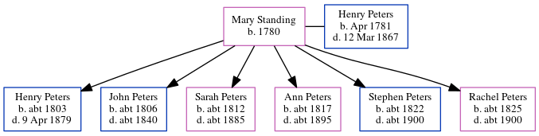

Mary Peters (née Standing) 1780 -
[ Home ] | [ Calendar ] | [ Surnames Index ] | [ Errors ] | [ Family History ]Mary Standing, the wife of Henry Peters (the four times great-uncle of Nigel Horne), was born in Folkestone, Kent, England in 1780 and married Henry (with whom she had 6 children: Henry Warman, John, Sarah Ann, Ann, Stephen and Rachel) at SS Mary & Eanswith in Folkestone on 28 May 18031.
Children
- Henry Warman was born c. 1803
- John was born c. 1806
- Sarah Ann was born c. 1812
- Ann was born c. 1817
- Stephen was born c. 1822
- Rachel was born c. 1825
Citations
- England, Select Marriages, 1538–1973 Ancestry.com Operations, Inc.
Media
Canterbury Marriage Banns Transcription - GBPRS-CANT-M-94042429-1
Canterbury Marriages Transcription - GBPRS-CANT-M-97134970-1
England Marriages 1538-1973 Transcription - R_847837017
England Marriages 1538-1973 Transcription - R_848367121
Family Tree
Map
Generated by ged2site. Last updated on Jul 3, 2024
Known Issues
Birth date (1780) has no citations